Analysis of scRNA data from Montoro et al.
Jason Willwerscheid
10/19/2018
Last updated: 2018-10-23
workflowr checks: (Click a bullet for more information)-
✔ R Markdown file: up-to-date
Great! Since the R Markdown file has been committed to the Git repository, you know the exact version of the code that produced these results.
-
✔ Environment: empty
Great job! The global environment was empty. Objects defined in the global environment can affect the analysis in your R Markdown file in unknown ways. For reproduciblity it’s best to always run the code in an empty environment.
-
✔ Seed:
set.seed(20180714)The command
set.seed(20180714)was run prior to running the code in the R Markdown file. Setting a seed ensures that any results that rely on randomness, e.g. subsampling or permutations, are reproducible. -
✔ Session information: recorded
Great job! Recording the operating system, R version, and package versions is critical for reproducibility.
-
Great! You are using Git for version control. Tracking code development and connecting the code version to the results is critical for reproducibility. The version displayed above was the version of the Git repository at the time these results were generated.✔ Repository version: 28891d1
Note that you need to be careful to ensure that all relevant files for the analysis have been committed to Git prior to generating the results (you can usewflow_publishorwflow_git_commit). workflowr only checks the R Markdown file, but you know if there are other scripts or data files that it depends on. Below is the status of the Git repository when the results were generated:
Note that any generated files, e.g. HTML, png, CSS, etc., are not included in this status report because it is ok for generated content to have uncommitted changes.Ignored files: Ignored: .DS_Store Ignored: .Rhistory Ignored: .Rproj.user/ Ignored: docs/.DS_Store Ignored: docs/figure/.DS_Store Untracked files: Untracked: analysis/gd_notes.Rmd Untracked: code/trachea.R Untracked: data/trachea/
Expand here to see past versions:
| File | Version | Author | Date | Message |
|---|---|---|---|---|
| Rmd | 28891d1 | Jason Willwerscheid | 2018-10-23 | workflowr::wflow_publish(“analysis/trachea.Rmd”) |
Fit I: subsetted data
First, I fit 30 nonnegative loadings (with arbitrary factors) to a subset of the data used in Montoro et al. (I selected for “highly variable genes” using the Seurat package. For the code used to do preprocessing, see below.)
factors_df <- readRDS("~/GitHub/FLASHvestigations/data/trachea/factors_df.rds")
top_genes <- readRDS("~/GitHub/FLASHvestigations/data/trachea/top_genes.rds")To find cell-type specific factor/loadings, I use the cell types assigned by Montoro et al. The number of each cell type is as follows:
table(factors_df$cell_type)
Basal Ciliated Club Goblet Ionocyte NEC Tuft
3843 423 2564 62 26 96 158 The following code is used to create the plots below.
library(ggplot2)Warning: package 'ggplot2' was built under R version 3.4.4do_boxplots <- function(kset, incl_top_genes = TRUE) {
for (k in kset) {
x <- paste0("X", k)
plot(ggplot(factors_df, aes_string(x = "cell_type", y = x)) +
geom_boxplot(outlier.shape = NA) +
labs(x = "Cell Type", y = paste("Factor", k, "value")))
if (incl_top_genes) {
print(knitr::kable(top_genes[[k]], digits = 2, row.names = FALSE))
}
}
}Ciliated cells
Three factors are very clearly associated with ciliated cells. A positive loading for factor 1 indicates the presence of a ciliated cell, whereas factors 17 and 18 delineate axes that could serve to differentiate among ciliated cells.
do_boxplots(c(1, 17, 18))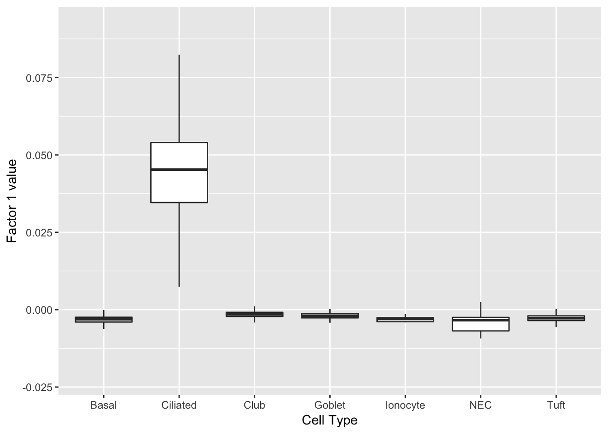
gene_ID val desc
-------------- ----- ----------------------------------------------
Ccdc153 0.08 coiled-coil domain containing 153
Tmem212 0.08 transmembrane protein 212
1110017D15Rik 0.08 RIKEN cDNA 1110017D15 gene
Fam183b 0.08 family with sequence similarity 183, member B
1700016K19Rik 0.08 RIKEN cDNA 1700016K19 gene
Dynlrb2 0.08 dynein light chain roadblock-type 2
AU040972 0.08
Tctex1d4 0.07 Tctex1 domain containing 4
1700007K13Rik 0.07 RIKEN cDNA 1700007K13 gene
Rsph1 0.07 radial spoke head 1 homolog (Chlamydomonas)
3300002A11Rik 0.07
1700026L06Rik 0.07 NA
Sntn 0.07 sentan, cilia apical structure protein
1700001C02Rik 0.07 RIKEN cDNA 1700001C02 gene
Gm867 0.07 predicted gene 867
Tm4sf1 0.07 transmembrane 4 superfamily member 1
Mlf1 0.07 myeloid leukemia factor 1
Cdhr4 0.07 cadherin-related family member 4
Cfap126 0.07 cilia and flagella associated protein 126
Ccdc113 0.07 coiled-coil domain containing 113 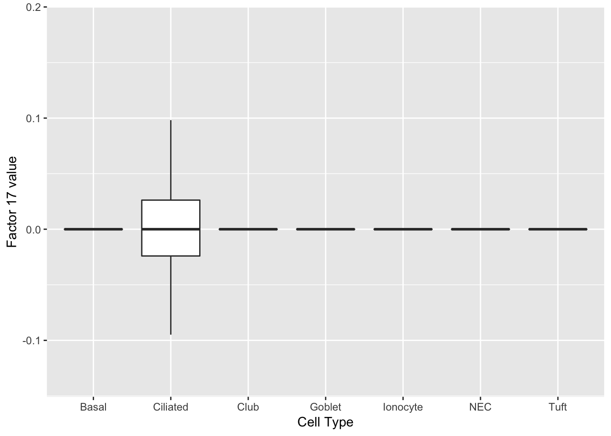
gene_ID val desc
--------- ----- ------------------------------------------------------
Adam8 0.15 a disintegrin and metallopeptidase domain 8
Cdhr4 0.15 cadherin-related family member 4
Cdh26 0.14 cadherin-like 26
Wnt11 0.12 wingless-type MMTV integration site family, member 11
Dnah6 0.12 dynein, axonemal, heavy chain 6
Dnah10 0.12 dynein, axonemal, heavy chain 10
BC048546 0.12 NA
Hydin 0.12 HYDIN, axonemal central pair apparatus protein
Dnah9 0.11 dynein, axonemal, heavy chain 9
Cdhr3 0.11 cadherin-related family member 3
Unc79 0.10 unc-79 homolog
Ccdc108 0.10 NA
Mapk15 0.10 mitogen-activated protein kinase 15
Spef2 0.10 sperm flagellar 2
Jam3 0.10 junction adhesion molecule 3
Ckb 0.10 creatine kinase, brain
Cd177 0.10 CD177 antigen
Pcp4l1 0.09 Purkinje cell protein 4-like 1
Lhb 0.09 luteinizing hormone beta
Foxj1 0.09 forkhead box J1 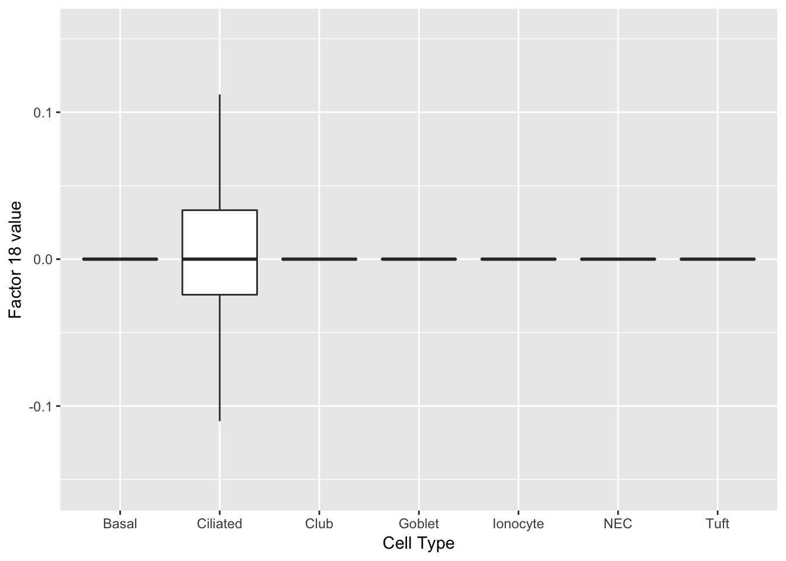
gene_ID val desc
-------------- ----- --------------------------------------------------
Pcp4l1 0.14 Purkinje cell protein 4-like 1
Tbata 0.14 thymus, brain and testes associated
Ckb 0.12 creatine kinase, brain
Lrrc34 0.12 leucine rich repeat containing 34
1700040L02Rik 0.11 NA
1700007G11Rik 0.11 NA
Jam3 0.11 junction adhesion molecule 3
Slc35g3 0.10 solute carrier family 35, member G3
Akap14 0.10 A kinase (PRKA) anchor protein 14
Spag6 0.10 sperm associated antigen 6
Dnajb13 0.10 DnaJ heat shock protein family (Hsp40) member B13
Ccdc113 0.09 coiled-coil domain containing 113
Ctsk 0.09 cathepsin K
Tekt1 0.09 tektin 1
1700024G13Rik 0.09 RIKEN cDNA 1700024G13 gene
Aoc1 0.09 amine oxidase, copper-containing 1
C530043A13Rik 0.09
6820408C15Rik 0.09 RIKEN cDNA 6820408C15 gene
Tmem232 0.09 transmembrane protein 232
Hmgcs2 0.09 3-hydroxy-3-methylglutaryl-Coenzyme A synthase 2 Ionocytes
One factor reliably identifies ionocytes.
do_boxplots(15)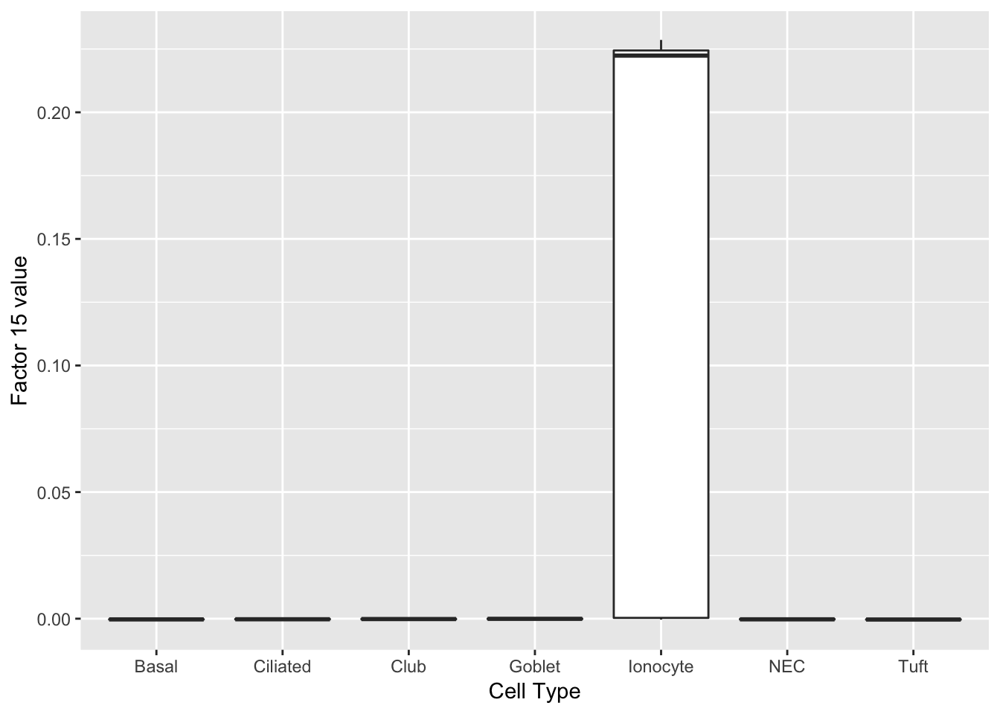
gene_ID val desc
--------- ----- --------------------------------------------------------
Gm933 0.35 NA
Ascl3 0.28 achaete-scute family bHLH transcription factor 3
Moxd1 0.28 monooxygenase, DBH-like 1
Stap1 0.28 signal transducing adaptor family member 1
Foxi1 0.26 forkhead box I1
Asgr1 0.22 asialoglycoprotein receptor 1
Slc12a2 0.18 solute carrier family 12, member 2
Nrip3 0.17 nuclear receptor interacting protein 3
Hepacam2 0.16 HEPACAM family member 2
Ldhb 0.15 lactate dehydrogenase B
Gng4 0.15 guanine nucleotide binding protein (G protein), gamma 4
P2ry14 0.14 purinergic receptor P2Y, G-protein coupled, 14
Coch 0.14 cochlin
Tekt5 0.14 tektin 5
Muc20 0.13 mucin 20
Gch1 0.13 GTP cyclohydrolase 1
Rasd1 0.12 RAS, dexamethasone-induced 1
Ckap2 0.11 cytoskeleton associated protein 2
Cd81 0.10 CD81 antigen
Nupr1 0.09 nuclear protein transcription regulator 1 Neuroendocrine cells
Another factor reliably identifies neuroendocrine cells. Interesting, the same genes are less expressed in tuft cells.
do_boxplots(4)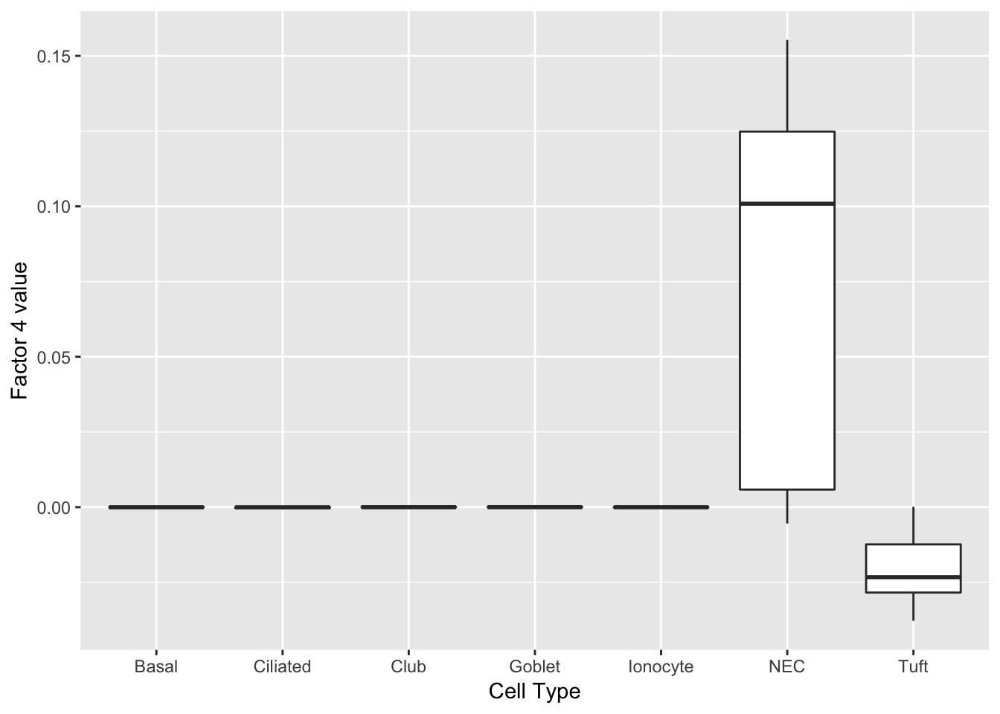
gene_ID val desc
-------- ----- ---------------------------------------------------------------
Chga 0.20 chromogranin A
Scg5 0.19 secretogranin V
Pkib 0.18 protein kinase inhibitor beta, cAMP dependent, testis specific
Calca 0.18 calcitonin/calcitonin-related polypeptide, alpha
Ngf 0.17 nerve growth factor
Nov 0.17 nephroblastoma overexpressed gene
Cxcl13 0.16 chemokine (C-X-C motif) ligand 13
Cib3 0.14 calcium and integrin binding family member 3
Ly6h 0.14 lymphocyte antigen 6 complex, locus H
Scg2 0.14 secretogranin II
Uchl1 0.14 ubiquitin carboxy-terminal hydrolase L1
Ascl1 0.13 achaete-scute family bHLH transcription factor 1
Olfm1 0.13 olfactomedin 1
Chgb 0.13 chromogranin B
Snap25 0.13 synaptosomal-associated protein 25
Tmem163 0.12 transmembrane protein 163
Tcerg1l 0.12 transcription elongation regulator 1-like
Ddc 0.12 dopa decarboxylase
Rundc3a 0.12 RUN domain containing 3A
Snca 0.12 synuclein, alpha Tuft cells
Factor 2 indicates the presence of a tuft cell, while factor 12 delineates an axis that could serve to differentiate tuft cells.
do_boxplots(c(2, 12))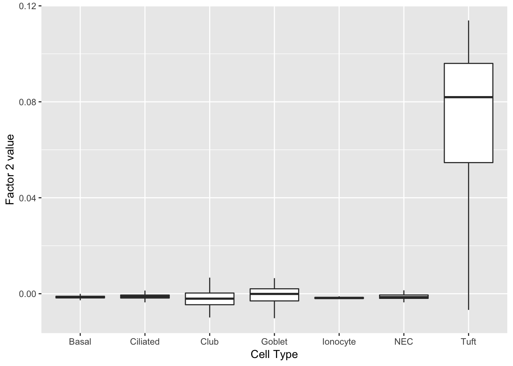
gene_ID val desc
--------- ----- -------------------------------------------------------------------
Lrmp 0.14 lymphoid-restricted membrane protein
Ltc4s 0.14 leukotriene C4 synthase
Trpm5 0.14 transient receptor potential cation channel, subfamily M, member 5
Gng13 0.14 guanine nucleotide binding protein (G protein), gamma 13
Ly6g6f 0.13 lymphocyte antigen 6 complex, locus G6F
Alox5ap 0.13 arachidonate 5-lipoxygenase activating protein
Selm 0.13 NA
Sh2d6 0.13 SH2 domain containing 6
Rgs13 0.13 regulator of G-protein signaling 13
Hck 0.13 hemopoietic cell kinase
Espn 0.13 espin
Avil 0.13 advillin
Dclk1 0.13 doublecortin-like kinase 1
Gnat3 0.12 guanine nucleotide binding protein, alpha transducing 3
Fxyd6 0.12 FXYD domain-containing ion transport regulator 6
Hepacam2 0.12 HEPACAM family member 2
Gnb3 0.12 guanine nucleotide binding protein (G protein), beta 3
Plac8 0.12 placenta-specific 8
Matk 0.12 megakaryocyte-associated tyrosine kinase
Ovol3 0.12 ovo like zinc finger 3 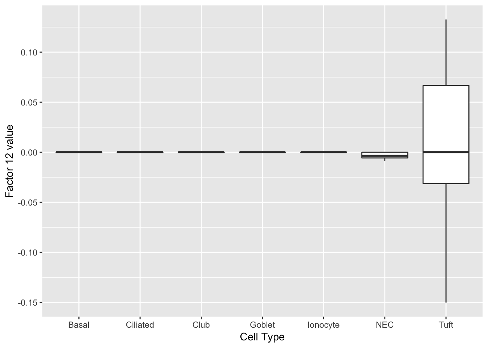
gene_ID val desc
-------------- ----- -------------------------------------------------------------------------
Scgb3a1 0.27 secretoglobin, family 3A, member 1
Ovol3 0.27 ovo like zinc finger 3
Reg3g 0.24 regenerating islet-derived 3 gamma
Muc5b 0.21 mucin 5, subtype B, tracheobronchial
Pigr 0.20 polymeric immunoglobulin receptor
Gnb3 0.19 guanine nucleotide binding protein (G protein), beta 3
Bpifb1 0.19 BPI fold containing family B, member 1
Sftpa1 0.16 surfactant associated protein A1
Msln 0.15 mesothelin
Agr2 0.14 anterior gradient 2
Pglyrp1 0.13 peptidoglycan recognition protein 1
Fxyd6 0.12 FXYD domain-containing ion transport regulator 6
Serpinb11 0.12 serine (or cysteine) peptidase inhibitor, clade B (ovalbumin), member 11
Clca1 0.12 chloride channel accessory 1
Pon1 0.11 paraoxonase 1
Sucnr1 0.11 succinate receptor 1
Dmbt1 0.10 deleted in malignant brain tumors 1
Otos 0.10 otospiralin
Bex1 0.10 brain expressed X-linked 1
2210011C24Rik 0.10 RIKEN cDNA 2210011C24 gene Goblet cells
Factors 14 and 27 are virtually solely expressed in goblet cells.
do_boxplots(c(14, 27))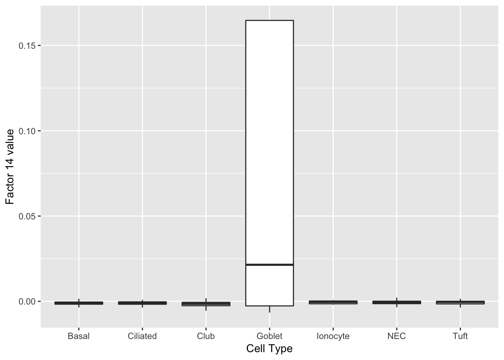
gene_ID val desc
---------- ----- ----------------------------------------------------------------------------------
Lman1l 0.38 lectin, mannose-binding 1 like
Gp2 0.35 glycoprotein 2 (zymogen granule membrane)
Lmcd1 0.32 LIM and cysteine-rich domains 1
Tff2 0.25 trefoil factor 2 (spasmolytic protein 1)
Cgref1 0.24 cell growth regulator with EF hand domain 1
Dmbt1 0.23 deleted in malignant brain tumors 1
Fkbp11 0.21 FK506 binding protein 11
Tff1 0.19 trefoil factor 1
Serpinb11 0.16 serine (or cysteine) peptidase inhibitor, clade B (ovalbumin), member 11
BC048546 0.15 NA
Muc5b 0.15 mucin 5, subtype B, tracheobronchial
Azgp1 0.14 alpha-2-glycoprotein 1, zinc
Creb3l1 0.14 cAMP responsive element binding protein 3-like 1
Creb3l4 0.13 cAMP responsive element binding protein 3-like 4
Galnt6 0.12 polypeptide N-acetylgalactosaminyltransferase 6
Agr2 0.11 anterior gradient 2
Pglyrp1 0.11 peptidoglycan recognition protein 1
Wfdc18 0.11 WAP four-disulfide core domain 18
Cited4 0.10 Cbp/p300-interacting transactivator, with Glu/Asp-rich carboxy-terminal domain, 4
Slc12a2 0.10 solute carrier family 12, member 2 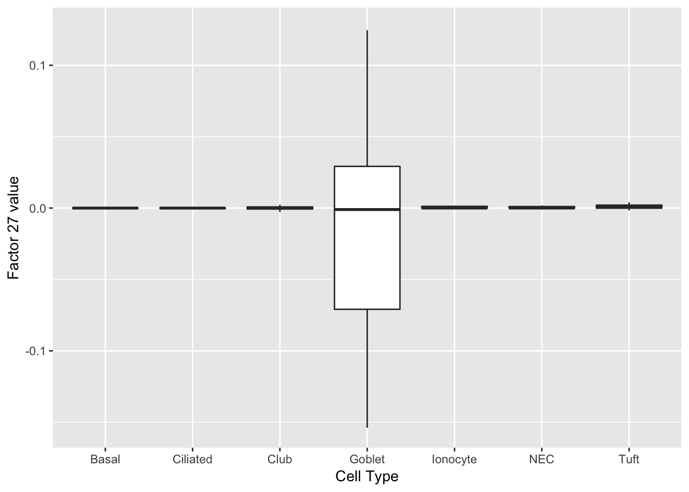
gene_ID val desc
---------- ----- ----------------------------------------------------------------------------------
Lmcd1 0.93 LIM and cysteine-rich domains 1
Dmbt1 0.18 deleted in malignant brain tumors 1
Gp2 0.14 glycoprotein 2 (zymogen granule membrane)
Cited4 0.10 Cbp/p300-interacting transactivator, with Glu/Asp-rich carboxy-terminal domain, 4
Dcpp3 0.08 demilune cell and parotid protein 3
Sbpl 0.08 spermine binding protein-like
Msln 0.07 mesothelin
Ltf 0.07 lactotransferrin
Fkbp11 0.07 FK506 binding protein 11
Dcpp1 0.06 demilune cell and parotid protein 1
Sox9 0.06 SRY (sex determining region Y)-box 9
Serpinb11 0.06 serine (or cysteine) peptidase inhibitor, clade B (ovalbumin), member 11
Creb3l4 0.06 cAMP responsive element binding protein 3-like 4
BC048546 0.06 NA Club cells
As might be expected, there are no factors that cleanly identify club cells. However, expression patterns are markedly different in club cells for factors 20 and 29.
do_boxplots(c(20, 29))
gene_ID val desc
-------- ----- ------------------------------------------------------
Ltf 0.23 lactotransferrin
Wfdc2 0.22 WAP four-disulfide core domain 2
Ces1f 0.20 carboxylesterase 1F
Sftpd 0.20 surfactant associated protein D
Lyz2 0.20 lysozyme 2
Alox15 0.17 arachidonate 15-lipoxygenase
Cyp2a5 0.17 cytochrome P450, family 2, subfamily a, polypeptide 5
Cxcl17 0.17 chemokine (C-X-C motif) ligand 17
Msln 0.16 mesothelin
Pglyrp1 0.16 peptidoglycan recognition protein 1
Nupr1 0.16 nuclear protein transcription regulator 1
Lgals3 0.15 lectin, galactose binding, soluble 3
Aldh1a1 0.15 aldehyde dehydrogenase family 1, subfamily A1
Clu 0.14 clusterin
Aqp5 0.14 aquaporin 5
Agr2 0.14 anterior gradient 2
Anxa1 0.13 annexin A1
Porcn 0.13 porcupine O-acyltransferase
Krt4 0.12 keratin 4
Crip1 0.12 cysteine-rich protein 1 (intestinal) 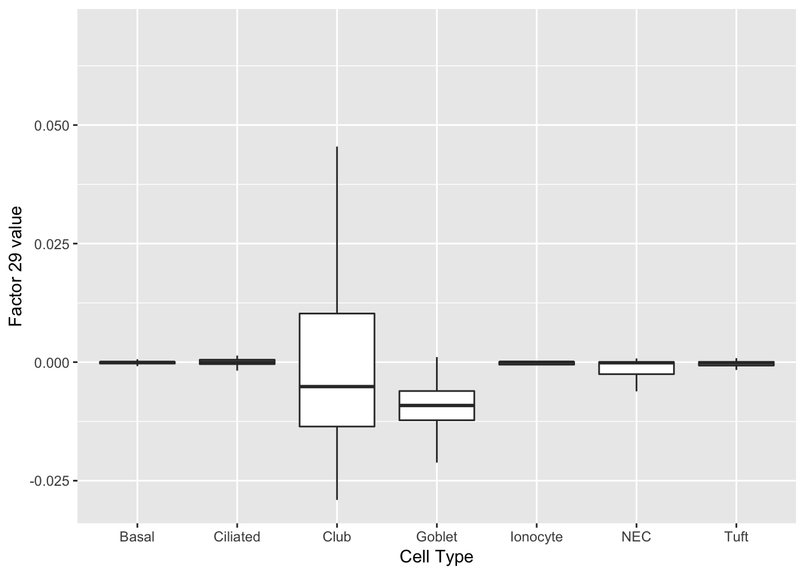
gene_ID val desc
-------- ----- -----------------------------------------
Hp 0.83 haptoglobin
Sftpb 0.19 surfactant associated protein B
Pon1 0.17 paraoxonase 1
Bpifb1 0.17 BPI fold containing family B, member 1
Trf 0.11 transferrin
Sult1d1 0.11 sulfotransferase family 1D, member 1
Hspb1 0.10 heat shock protein 1
Cldn10 0.10 claudin 10
Scgb3a1 0.09 secretoglobin, family 3A, member 1
Clu 0.09 clusterin
Sftpd 0.08 surfactant associated protein D
Muc20 0.08 mucin 20
Ldhb 0.07 lactate dehydrogenase B
Wfdc2 0.07 WAP four-disulfide core domain 2
Sftpa1 0.07 surfactant associated protein A1
Cxcl17 0.07 chemokine (C-X-C motif) ligand 17
Slc12a2 0.07 solute carrier family 12, member 2
Tff2 0.07 trefoil factor 2 (spasmolytic protein 1)
Ccl20 0.07 chemokine (C-C motif) ligand 20
Hspa1a 0.06 heat shock protein 1A Basal cells
I would also not expect to see clean factors for basal cells. But note that factor 5 is usually positive for basal cells, but more often negative for other cell types.
do_boxplots(5)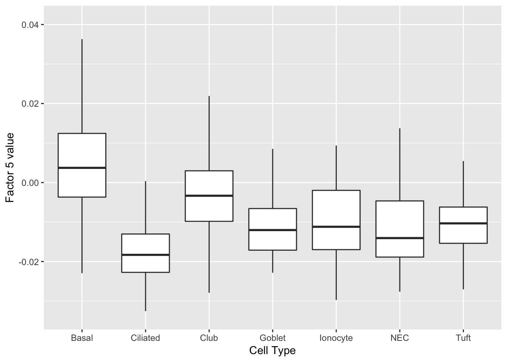
gene_ID val desc
-------- ----- ---------------------------------------------------------
Lgals3 0.18 lectin, galactose binding, soluble 3
Krt5 0.16 keratin 5
Aqp3 0.15 aquaporin 3
Cav1 0.15 caveolin 1, caveolae protein
Anxa1 0.15 annexin A1
Krt7 0.14 keratin 7
Sfn 0.14 stratifin
Gsn 0.14 gelsolin
Krt15 0.14 keratin 15
Dapl1 0.14 death associated protein-like 1
Upk3bl 0.12 uroplakin 3B-like
Sparc 0.12 secreted acidic cysteine rich glycoprotein
Tppp3 0.12 tubulin polymerization-promoting protein family member 3
Vsnl1 0.12 visinin-like 1
Krt17 0.12 keratin 17
Ifitm1 0.11 interferon induced transmembrane protein 1
F3 0.11 coagulation factor III
Rpl13 0.11 ribosomal protein L13
Tacstd2 0.11 tumor-associated calcium signal transducer 2
Phlda1 0.11 pleckstrin homology like domain, family A, member 1 Fit II: complete data
For comparison, I fit 10 factors greedily using point-normal priors (with no backfitting) and with loose convergence conditions (tol = 10). This took about 2 hours on the RCC cluster using 32 GB of memory.
complete_factors_df <- readRDS("~/GitHub/FLASHvestigations/data/trachea/complete_factors_df.rds")
complete_top_genes <- readRDS("~/GitHub/FLASHvestigations/data/trachea/complete_top_genes.rds")Ciliated
Factor 2 can be compared with factor 1 above.
plot(ggplot(complete_factors_df, aes_string(x = "cell_type", y = "X2")) +
geom_boxplot(outlier.shape = NA) +
labs(x = "Cell Type", y = paste("Factor 2 value")))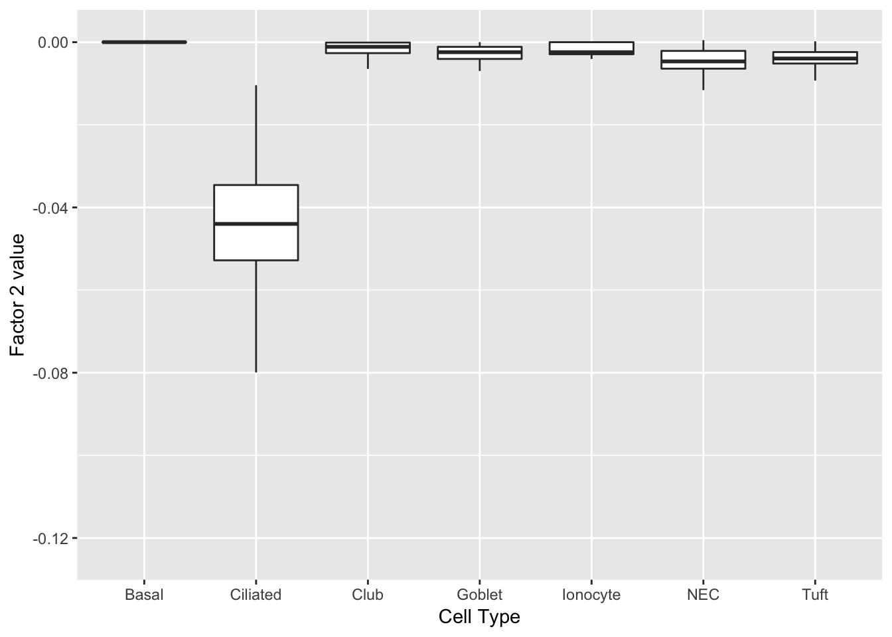
print(complete_top_genes[[2]]) AU040972 Tuba1a Krt15 Ccdc153 Tppp3
0.13244389 0.11614931 0.10856870 0.10793090 0.10423640
Dynlrb2 Tmem212 1110017D15Rik Chchd10 Elof1
0.10322122 0.10226836 0.09807541 0.09275055 0.09070016
Rsph1 Fam183b 1700007K13Rik Scgb3a2 Mlf1
0.08833730 0.08694013 0.08614052 0.08554581 0.08273393
1700016K19Rik Riiad1 Cd24a Aqp5 Aqp3
0.08229105 0.08141643 0.08127612 0.07772825 0.07628333 I reproduce the plot from above for comparison:
do_boxplots(1)
gene_ID val desc
-------------- ----- ----------------------------------------------
Ccdc153 0.08 coiled-coil domain containing 153
Tmem212 0.08 transmembrane protein 212
1110017D15Rik 0.08 RIKEN cDNA 1110017D15 gene
Fam183b 0.08 family with sequence similarity 183, member B
1700016K19Rik 0.08 RIKEN cDNA 1700016K19 gene
Dynlrb2 0.08 dynein light chain roadblock-type 2
AU040972 0.08
Tctex1d4 0.07 Tctex1 domain containing 4
1700007K13Rik 0.07 RIKEN cDNA 1700007K13 gene
Rsph1 0.07 radial spoke head 1 homolog (Chlamydomonas)
3300002A11Rik 0.07
1700026L06Rik 0.07 NA
Sntn 0.07 sentan, cilia apical structure protein
1700001C02Rik 0.07 RIKEN cDNA 1700001C02 gene
Gm867 0.07 predicted gene 867
Tm4sf1 0.07 transmembrane 4 superfamily member 1
Mlf1 0.07 myeloid leukemia factor 1
Cdhr4 0.07 cadherin-related family member 4
Cfap126 0.07 cilia and flagella associated protein 126
Ccdc113 0.07 coiled-coil domain containing 113 Neuroendocrine cells
Factor 9 can be compared with factor 4 above.
plot(ggplot(complete_factors_df, aes_string(x = "cell_type", y = "X9")) +
geom_boxplot(outlier.shape = NA) +
labs(x = "Cell Type", y = paste("Factor 9 value")))
print(complete_top_genes[[9]]) Calca Chga Cxcl13 Tmem158 Scg5 Wfdc2
0.17185395 0.14734323 0.14441024 0.12496379 0.11933002 0.11280509
Gsto1 Pkib Cbr2 Cyp2f2 Igfbp5 Tuba1a
0.10879159 0.10803154 0.10201765 0.10025768 0.09961508 0.09890735
Nov Car8 Selenbp1 Ngf Cd9 Krt15
0.09823076 0.09709957 0.09438934 0.09266654 0.09163381 0.08768492
Krt7 Gsta4
0.08548184 0.08459633 do_boxplots(4)
gene_ID val desc
-------- ----- ---------------------------------------------------------------
Chga 0.20 chromogranin A
Scg5 0.19 secretogranin V
Pkib 0.18 protein kinase inhibitor beta, cAMP dependent, testis specific
Calca 0.18 calcitonin/calcitonin-related polypeptide, alpha
Ngf 0.17 nerve growth factor
Nov 0.17 nephroblastoma overexpressed gene
Cxcl13 0.16 chemokine (C-X-C motif) ligand 13
Cib3 0.14 calcium and integrin binding family member 3
Ly6h 0.14 lymphocyte antigen 6 complex, locus H
Scg2 0.14 secretogranin II
Uchl1 0.14 ubiquitin carboxy-terminal hydrolase L1
Ascl1 0.13 achaete-scute family bHLH transcription factor 1
Olfm1 0.13 olfactomedin 1
Chgb 0.13 chromogranin B
Snap25 0.13 synaptosomal-associated protein 25
Tmem163 0.12 transmembrane protein 163
Tcerg1l 0.12 transcription elongation regulator 1-like
Ddc 0.12 dopa decarboxylase
Rundc3a 0.12 RUN domain containing 3A
Snca 0.12 synuclein, alpha Tuft cells
Finally, factor 5 can be compared with factor 2 above.
plot(ggplot(complete_factors_df, aes_string(x = "cell_type", y = "X5")) +
geom_boxplot(outlier.shape = NA) +
labs(x = "Cell Type", y = paste("Factor 5 value")))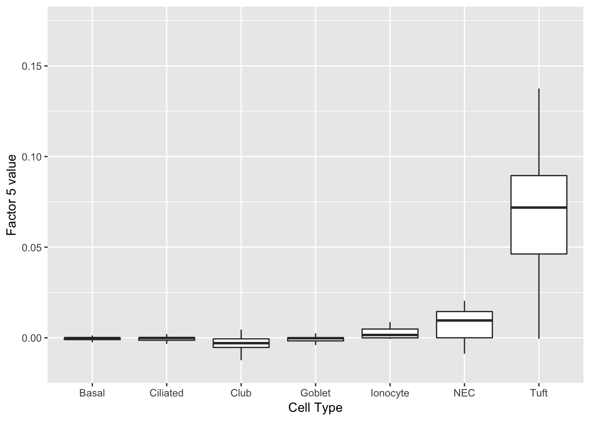
print(complete_top_genes[[5]]) Lrmp Gng13 Plac8 Ltc4s Gnb3 Gsto1
0.15622099 0.13385388 0.12714941 0.12300622 0.11153609 0.10685213
Selenbp1 Cyp2f2 Cbr2 Krt15 Cyp2a5 Aqp5
0.10298391 0.10210536 0.09708848 0.08929564 0.08929273 0.08673411
Scgb3a2 Lypd2 Calm2 Wfdc2 Ltf Ces1d
0.08585164 0.08531915 0.08426686 0.08374960 0.08230332 0.08123320
Gsta4 S100a6
0.07991431 0.07953447 do_boxplots(2)
gene_ID val desc
--------- ----- -------------------------------------------------------------------
Lrmp 0.14 lymphoid-restricted membrane protein
Ltc4s 0.14 leukotriene C4 synthase
Trpm5 0.14 transient receptor potential cation channel, subfamily M, member 5
Gng13 0.14 guanine nucleotide binding protein (G protein), gamma 13
Ly6g6f 0.13 lymphocyte antigen 6 complex, locus G6F
Alox5ap 0.13 arachidonate 5-lipoxygenase activating protein
Selm 0.13 NA
Sh2d6 0.13 SH2 domain containing 6
Rgs13 0.13 regulator of G-protein signaling 13
Hck 0.13 hemopoietic cell kinase
Espn 0.13 espin
Avil 0.13 advillin
Dclk1 0.13 doublecortin-like kinase 1
Gnat3 0.12 guanine nucleotide binding protein, alpha transducing 3
Fxyd6 0.12 FXYD domain-containing ion transport regulator 6
Hepacam2 0.12 HEPACAM family member 2
Gnb3 0.12 guanine nucleotide binding protein (G protein), beta 3
Plac8 0.12 placenta-specific 8
Matk 0.12 megakaryocyte-associated tyrosine kinase
Ovol3 0.12 ovo like zinc finger 3 Code
The code used to pre-process the dataset can be viewed below.
library(mixsqp)
devtools::load_all("~/GitHub/flashrtools/")
t_fl30 <- system.time({
fl30 <- flashier(trachea,
var_type = "by_row",
method = "nnloadings",
greedy_Kmax = 30,
backfit_maxiter = 100)
})
# Fit a hierarchical FLASH object to ensure there are no serious problems:
hier_fl <- flashier(fl30$ldf$f,
greedy_Kmax = 30,
var_type = "by_row",
method = "fastest")
plot(hier_fl, plot_factors = TRUE, plot_scree = FALSE)
# Extract factors and append cell type (as established by Montoro et al.):
factors_df <- data.frame(fl30$ldf$f)
cell_types <- sapply(strsplit(colnames(trachea), "_"), function(x) x[3])
cell_types <- as.factor(cell_types)
lvls <- levels(cell_types)
lvls[lvls == "Neuroendocrine"] <- "NEC"
levels(cell_types) <- lvls
factors_df$cell_type <- cell_types
saveRDS(factors_df, "~/GitHub/FLASHvestigations/data/trachea/factors_df.rds")
top_genes <- get_top_loading_elements(fl30)
top_genes <- add_desc_to_top_genes(top_genes,
dataset = "mmusculus_gene_ensembl")
saveRDS(top_genes, "~/GitHub/FLASHvestigations/data/trachea/top_genes.rds")Session information
sessionInfo()R version 3.4.3 (2017-11-30)
Platform: x86_64-apple-darwin15.6.0 (64-bit)
Running under: macOS High Sierra 10.13.6
Matrix products: default
BLAS: /Library/Frameworks/R.framework/Versions/3.4/Resources/lib/libRblas.0.dylib
LAPACK: /Library/Frameworks/R.framework/Versions/3.4/Resources/lib/libRlapack.dylib
locale:
[1] en_US.UTF-8/en_US.UTF-8/en_US.UTF-8/C/en_US.UTF-8/en_US.UTF-8
attached base packages:
[1] stats graphics grDevices utils datasets methods base
other attached packages:
[1] ggplot2_3.0.0
loaded via a namespace (and not attached):
[1] Rcpp_0.12.19 bindr_0.1 knitr_1.20
[4] whisker_0.3-2 magrittr_1.5 workflowr_1.0.1
[7] munsell_0.4.3 colorspace_1.3-2 R6_2.2.2
[10] rlang_0.2.0 highr_0.6 dplyr_0.7.4
[13] stringr_1.3.0 plyr_1.8.4 tools_3.4.3
[16] grid_3.4.3 gtable_0.2.0 R.oo_1.21.0
[19] withr_2.1.1.9000 git2r_0.21.0 htmltools_0.3.6
[22] assertthat_0.2.0 yaml_2.1.17 lazyeval_0.2.1
[25] rprojroot_1.3-2 digest_0.6.15 tibble_1.4.2
[28] bindrcpp_0.2 R.utils_2.6.0 glue_1.2.0
[31] evaluate_0.10.1 rmarkdown_1.8 labeling_0.3
[34] stringi_1.1.6 pillar_1.2.1 compiler_3.4.3
[37] scales_0.5.0 backports_1.1.2 R.methodsS3_1.7.1
[40] pkgconfig_2.0.1 This reproducible R Markdown analysis was created with workflowr 1.0.1